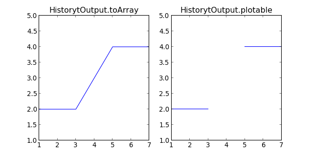

Post Processing¶
Finite Element Modeling post processing tools.
Field Outputs¶
Scalar fields¶
- class abapy.postproc.FieldOutput(position='node', data=None, labels=None, dti='I', dtf='f')[source]¶
Scalar output representing a field evaluated on nodes or elements referenced by their labels. A FieldOutput instance cannot be interpreted with its mesh. On initiation, labels and data will be reordered to have labels sorted.
Parameters: - position (‘node’ or ‘element’) – location of the field evaluation
- data (list, array.array, numpy.array containing floats) – value of the field where it is evaluated
- labels (list, array.array, numpy.array containt ints or None.) – labels of the nodes/elements where the field is evaluated. If None, labels will be [1,2,...,len(data)+1]
- dti (‘I’, ‘H’) – int data type in array.array
- dtf (‘f’, ‘d’) – float data type in array.array
>>> from abapy.postproc import FieldOutput >>> data = [-1.,5.,3.] >>> labels = [1,3,2] >>> fo = FieldOutput(data=data, labels = labels, position = 'node') >>> print fo # data is sorted by labels FieldOutput instance Position = node Label Data 1 -1.0 2 3.0 3 5.0 >>> print fo[1:2] # slicing FieldOutput instance Position = node Label Data 1 -1.0 >>> print fo[2] # indexing FieldOutput instance Position = node Label Data 2 3.0 >>> print fo[1,3] # multiple indexing FieldOutput instance Position = node Label Data 1 -1.0 3 5.0 >>> print fo*2 # multiplication FieldOutput instance Position = node Label Data 1 -2.0 2 6.0 3 10.0 >>> fo2 = fo**2 #power >>> print fo2 FieldOutput instance Position = node Label Data 1 1.0 2 9.0 3 25.0 >>> print fo * fo2 FieldOutput instance Position = node Label Data 1 -1.0 2 27.0 3 125.0 >>> print fo + fo2 FieldOutput instance Position = node Label Data 1 0.0 2 12.0 3 30.0 >>> print abs(fo) FieldOutput instance Position = node Label Data 1 1.0 2 3.0 3 5.0
Note
If dti=’H’ is chosen, labels are stored as unsigned 16 bits ints. If more than 65k labels are stored, an OverFlow error will be raised.
Add/remove/get data¶
- FieldOutput.add_data(label, data)[source]¶
Adds one point to a FieldOutput instance. Label must not already exist in the current FieldOutput, if not so, nothing will be changed. Data and label will be inserted in self.data, self.labels in order to keep self.labels sorted.
>>> from abapy.postproc import FieldOutput >>> data = [5.5, 2.2] >>> labels = [1,4] >>> temperature = FieldOutput(labels = labels, data = data, position = 'node') >>> temperature.add_data(2, 5.) >>> temperature.data # labels are sorted array('f', [5.5, 5.0, 2.200000047683716]) >>> temperature.labels # data was sorted like labels array('I', [1L, 2L, 4L])
Parameters: - label – labels of the nodes/elements where the field is evaluated.
- data (float) – value of the field where it is evaluated
- FieldOutput.get_data(label)[source]¶
Returns data at a location with given label.
Parameters: label (int > 0) – location’s label. Return type: float Note
Requesting data at a label that does not exist in the instance will just lead in a warning but if label is negative or is not int, then an Exception will be raised.
VTK Export¶
- FieldOutput.dump2vtk(name='fieldOutput')[source]¶
Converts the FieldOutput instance to VTK format which can be directly read by Mayavi2 or Paraview. This method is very useful to quickly and efficiently plot 3D mesh and fields.
Parameters: name (string) – name used for the field in the output. Return type: string >>> from abapy.postproc import FieldOutput >>> from abapy.mesh import Mesh, Nodes >>> x = [0.,1.,0.] >>> y = [0.,0.,1.] >>> z = [0.,0.,0.] >>> labels = [1,2,3] >>> nodes = Nodes(x=x,y=y,z=z, labels=labels) >>> mesh = Mesh(nodes=nodes) >>> mesh.add_element(label = 1 , connectivity = [1,2,3], space = 2 , name = 'tri3') # triangle element >>> nodeField = FieldOutput() >>> nodeField.add_data(data = 0., label = 1) >>> nodeField.add_data(data = 10., label = 2) >>> nodeField.add_data(data = 20., label = 3) >>> elementField = FieldOutput(position='element') >>> elementField.add_data(label = 1, data =10.) >>> out = '' >>> out+=mesh.dump2vtk() >>> out+=nodeField.dump2vtk('nodeField') >>> out+=elementField.dump2vtk('elementField') >>> print out # vtk DataFile Version 2.0 Unstructured Grid Example ASCII DATASET UNSTRUCTURED_GRID POINTS 3 float 0.0 0.0 0.0 1.0 0.0 0.0 0.0 1.0 0.0 CELLS 1 4 3 0 1 2 CELL_TYPES 1 5 POINT_DATA 3 SCALARS nodeField float 1 LOOKUP_TABLE default 0.0 10.0 20.0 CELL_DATA 1 SCALARS elementField float 1 LOOKUP_TABLE default 10.0
Result in Paraview:

Operations and invariants¶
Vector fields¶
- class abapy.postproc.VectorFieldOutput(data1=None, data2=None, data3=None, position='node', dti='I', dtf='f')[source]¶
3D vector field output. Using this class instead of 3 scalar FieldOutput instances is efficient because labels are stored only since and allows all vector operations like dot, cross, norm.
Parameters: - data1 (FieldOutput instance or None) – x coordinate
- data2 (FieldOutput instance or None) – y coordinate
- data3 (FieldOutput instance or None) – z coordinate
- position (‘node’ or ‘element’) – position at which data is computed
- dti (‘I’ for uint32 or ‘H’ for uint16) – array.array int data type
- dtf (‘f’ float32 or ‘d’ for float64) – array.array int data type
>>> from abapy.postproc import FieldOutput, VectorFieldOutput >>> data1 = [1,2,3,5,6,0] >>> data2 = [1. for i in data1] >>> labels = range(1,len(data1)+1) >>> fo1, fo2 = FieldOutput(labels = labels, data=data1, position='node' ), FieldOutput(labels = labels, data=data2,position='node') >>> vector = VectorFieldOutput(data1 = fo1, data2 = fo2 ) >>> vector2 = VectorFieldOutput(data2 = fo2 ) >>> vector # short description <VectorFieldOutput instance: 6 locations> >>> print vector # long description VectorFieldOutput instance Position = node Label Data1 Data2 Data3 1 1.0 1.0 0.0 2 2.0 1.0 0.0 3 3.0 1.0 0.0 4 5.0 1.0 0.0 5 6.0 1.0 0.0 6 0.0 1.0 0.0 >>> print vector[6] # Returns a VectorFieldOutput instance VectorFieldOutput instance Position = node Label Data1 Data2 Data3 6 0.0 1.0 1.0 >>> print vector[1,4,6] # Picking label by label VectorFieldOutput instance Position = node Label Data1 Data2 Data3 1 1.0 1.0 1.0 4 5.0 1.0 1.0 6 0.0 1.0 1.0 >>> print vector[1:6:2] # Slicing VectorFieldOutput instance Position = node Label Data1 Data2 Data3 1 1.0 1.0 1.0 3 3.0 1.0 1.0 5 6.0 1.0 1.0 >>> vector.get_data(6) # Returns 3 floats (0.0, 1.0, 0.0) >>> vector.norm() # Returns norm <FieldOutput instance: 6 locations> >>> vector.sum() # returns the sum of coords <FieldOutput instance: 6 locations> >>> vector * vector2 # Itemwise product (like numpy, unlike matlab) <VectorFieldOutput instance: 6 locations> >>> vector.dot(vector2) # Dot/Scalar product <FieldOutput instance: 6 locations> >>> vector.cross(vector2) # Cross/Vector product <VectorFieldOutput instance: 6 locations> >>> vector + 2 # Itemwise addition <VectorFieldOutput instance: 6 locations> >>> vector * 2 # Itemwise multiplication <VectorFieldOutput instance: 6 locations> >>> vector / 2 # Itemwise division <VectorFieldOutput instance: 6 locations> >>> vector / vector2 # Itemwise division between vectors (numpy way) Warning: divide by zero encountered in divide Warning: invalid value encountered in divide <VectorFieldOutput instance: 6 locations> >>> abs(vector) # Absolute value <VectorFieldOutput instance: 6 locations> >>> vector ** 2 # Power <VectorFieldOutput instance: 6 locations> >>> vector ** vector # Itemwize power <VectorFieldOutput instance: 6 locations>
Note
- data1, data2 and data3 must have same position and label or be None. If one data is None, it is supposed to be zero.
- Storage data dype is the highest standard of all 3 data.
- Numpy is not used in the constructor to allow the creation of instances in Abaqus Python but most other operation require numpy for speed reasons.
Add/remove/get data¶
- VectorFieldOutput.add_data(label, data1=0.0, data2=0.0, data3=0.0)[source]¶
Adds one point to a VectorFieldOutput instance. Label must not already exist in the current FieldOutput, if not so, nothing will be changed. Data and label will be inserted in self.data, self.labels in order to keep self.labels sorted.
Parameters: - label – labels of the nodes/elements where the field is evaluated.
- data1 (float) – value of the coordinate 1 of the field where it is evaluated.
- data2 (float) – value of the coordinate 2 of the field where it is evaluated.
- data3 (float) – value of the coordinate 3 of the field where it is evaluated.
- VectorFieldOutput.get_data(label)[source]¶
Returns coordinates at a location with given label.
Parameters: label (int > 0) – location’s label. Return type: float, float, float Note
Requesting data at a label that does not exist in the instance will just lead in a warning but if label is negative or is not int, then an Exception will be raised.
VTK Export¶
- VectorFieldOutput.dump2vtk(name='vectorFieldOutput')[source]¶
Converts the VectorFieldOutput instance to VTK format which can be directly read by Mayavi2 or Paraview. This method is very useful to quickly and efficiently plot 3D mesh and fields.
Parameters: name (string) – name used for the field in the output. Return type: string >>> from abapy.postproc import FieldOutput, VectorFieldOutput >>> from abapy.mesh import RegularQuadMesh >>> mesh = RegularQuadMesh() >>> data1 = [2,2,5,10] >>> data2 = [1. for i in data1] >>> labels = range(1,len(data1)+1) >>> fo1, fo2 = FieldOutput(labels = labels, data=data1, position='node' ), FieldOutput(labels = labels, data=data2,position='node') >>> vector = VectorFieldOutput(data1 = fo1, data2 = fo2 ) >>> out = mesh.dump2vtk() + vector.dump2vtk() >>> f = open('vector.vtk','w') >>> f.write(out) >>> f.close()
Operations¶
- VectorFieldOutput.norm()[source]¶
Computes norm of the vector at each location and returns it as a scalar FieldOutput.
>>> norm = Vec.norm()
Return type: FieldOutput instance
- VectorFieldOutput.sum()[source]¶
Returns the sum of all coordinates.
Return type: FieldOutput instance
Tensor fields¶
- class abapy.postproc.TensorFieldOutput(data11=None, data22=None, data33=None, data12=None, data13=None, data23=None, position='node', dti='I', dtf='f')[source]¶
Symmetric tensor field output. Using this class instead of 6 scalar FieldOutput instances is efficient because labels are stored only since and allows all operations like invariants, product, sum...
Parameters: - data11 (FieldOutput instance or None) – 11 component
- data22 (FieldOutput instance or None) – 22 component
- data33 (FieldOutput instance or None) – 33 component
- data12 (FieldOutput instance or None) – 12 component
- data13 (FieldOutput instance or None) – 13 component
- data23 (FieldOutput instance or None) – 23 component
- position (‘node’ or ‘element’) – position at which data is computed
- dti (‘I’ for uint32 or ‘H’ for uint16) – array.array int data type
- dtf (‘f’ float32 or ‘d’ for float64) – array.array int data type
>>> from abapy.postproc import FieldOutput, TensorFieldOutput, VectorFieldOutput >>> data11 = [1., 1., 1.] >>> data22 = [2., 4., -1] >>> data12 = [1., 2., 0.] >>> labels = range(1,len(data11)+1) >>> fo11 = FieldOutput(labels = labels, data=data11,position='node') >>> fo22 = FieldOutput(labels = labels, data=data22,position='node') >>> fo12 = FieldOutput(labels = labels, data=data12,position='node') >>> tensor = TensorFieldOutput(data11 = fo11, data22 = fo22, data12 = fo12 ) >>> tensor2 = TensorFieldOutput(data11= fo22 ) >>> tensor <TensorFieldOutput instance: 3 locations> >>> print tensor TensorFieldOutput instance Position = node Label Data11 Data22 Data33 Data12 Data13 Data23 1 1.0e+00 2.0e+00 0.0e+00 1.0e+00 0.0e+00 0.0e+00 2 1.0e+00 4.0e+00 0.0e+00 2.0e+00 0.0e+00 0.0e+00 3 1.0e+00 -1.0e+00 0.0e+00 0.0e+00 0.0e+00 0.0e+00 >>> print tensor[1,2] TensorFieldOutput instance Position = node Label Data11 Data22 Data33 Data12 Data13 Data23 1 1.0e+00 2.0e+00 0.0e+00 1.0e+00 0.0e+00 0.0e+00 2 1.0e+00 4.0e+00 0.0e+00 2.0e+00 0.0e+00 0.0e+00 >>> print tensor *2. + 1. TensorFieldOutput instance Position = node Label Data11 Data22 Data33 Data12 Data13 Data23 1 3.0e+00 5.0e+00 1.0e+00 3.0e+00 1.0e+00 1.0e+00 2 3.0e+00 9.0e+00 1.0e+00 5.0e+00 1.0e+00 1.0e+00 3 3.0e+00 -1.0e+00 1.0e+00 1.0e+00 1.0e+00 1.0e+00 >>> print tensor ** 2 # Piecewise power TensorFieldOutput instance Position = node Label Data11 Data22 Data33 Data12 Data13 Data23 1 1.0e+00 4.0e+00 0.0e+00 1.0e+00 0.0e+00 0.0e+00 2 1.0e+00 1.6e+01 0.0e+00 4.0e+00 0.0e+00 0.0e+00 3 1.0e+00 1.0e+00 0.0e+00 0.0e+00 0.0e+00 0.0e+00 >>> vector = VectorFieldOutput(data1 = fo11) >>> print tensor * vector # Matrix product VectorFieldOutput instance Position = node Label Data1 Data2 Data3 1 1.0 1.0 0.0 2 1.0 2.0 0.0 3 1.0 0.0 0.0 >>> print tensor * tensor2 # Contracted tensor product FieldOutput instance Position = node Label Data 1 2.0 2 4.0 3 -1.0
Add/remove/get data¶
- TensorFieldOutput.add_data(label, data11=0.0, data22=0.0, data33=0.0, data12=0.0, data13=0.0, data23=0.0)[source]¶
Adds one point to a VectorFieldOutput instance. Label must not already exist in the current FieldOutput, if not so, nothing will be changed. Data and label will be inserted in self.data, self.labels in order to keep self.labels sorted.
Parameters: - label – labels of the nodes/elements where the field is evaluated.
- data11 – value of the component 11 of the field where it is evaluated.
- data22 – value of the component 22 of the field where it is evaluated.
- data33 – value of the component 33 of the field where it is evaluated.
- data12 – value of the component 12 of the field where it is evaluated.
- data13 – value of the component 13 of the field where it is evaluated.
- data23 – value of the component 23 of the field where it is evaluated.
- TensorFieldOutput.get_data(label)[source]¶
Returns the components (11, 22, 33, 12, 13 or 23) at a location with given label.
Parameters: label (int > 0) – location’s label. Return type: float, float, float, float, float, float Note
Requesting data at a label that does not exist in the instance will just lead in a warning but if label is negative or is not int, then an Exception will be raised.
VTK Export¶
- TensorFieldOutput.dump2vtk(name='tensorFieldOutput')[source]¶
Converts the TensorFieldOutput instance to VTK format which can be directly read by Mayavi2 or Paraview. This method is very useful to quickly and efficiently plot 3D mesh and fields.
Parameters: name (string) – name used for the field in the output. Return type: string Note
this method has not been fully tested yet, bugs are probably still in.
Operations and invariants¶
- TensorFieldOutput.sum()[source]¶
Returns the sum of all components of the tensor.
Return type: FieldOutput instance.
- TensorFieldOutput.trace()[source]¶
Returns the trace of the tensor:
Return type: FieldOutput instance.
- TensorFieldOutput.deviatoric()[source]¶
Returns the deviatoric part tensor:
Return type: TensorFieldOutput instance
- TensorFieldOutput.spheric()[source]¶
Returns the spheric part of the tensor:
Return type: TensorFieldOutput instance
- TensorFieldOutput.i1()[source]¶
Returns the first invariant, is equivalent to trace.
Return type: FieldOutput instance.
- TensorFieldOutput.i2()[source]¶
Returns the second invariant of the tensor defined as:
Return type: FieldOutput instance. Note
this definition is the most practical one for mechanical engineering but not the only one possible.
- TensorFieldOutput.i3()[source]¶
Returns the third invariant of the tensor:
Return type: FieldOutput instance.
- TensorFieldOutput.j2()[source]¶
Returns the second invariant of the deviatoric part of the tensor defined as:
Return type: FieldOutput instance. Note
this definition is not the mathematical definition but is the most practical one for mechanical engineering. This should be debated.
- TensorFieldOutput.j3()[source]¶
Returns the third invariant of the deviatoric part of the tensor:
Return type: FieldOutput instance.
- TensorFieldOutput.eigen()[source]¶
Returns the three eigenvalues with decreasing sorting and the 3 normed respective eigenvectors.
Return type: 3 FieldOutput instances and 3 VectorFieldOutput instances. >>> from abapy.postproc import FieldOutput, TensorFieldOutput, VectorFieldOutput, Identity_like >>> data11 = [0., 0., 1.] >>> data22 = [0., 0., -1] >>> data12 = [1., 2., 0.] >>> labels = range(1,len(data11)+1) >>> fo11 = FieldOutput(labels = labels, data=data11,position='node') >>> fo22 = FieldOutput(labels = labels, data=data22,position='node') >>> fo12 = FieldOutput(labels = labels, data=data12,position='node') >>> tensor = TensorFieldOutput(data11 = fo11, data22 = fo22, data12 = fo12 ) >>> t1, t2, t3, v1, v2, v3 = tensor.eigen() >>> print t1 FieldOutput instance Position = node Label Data 1 1.0 2 2.0 3 1.0 >>> print v1 VectorFieldOutput instance Position = node Label Data1 Data2 Data3 1 0.707106769085 0.707106769085 0.0 2 0.707106769085 0.707106769085 0.0 3 1.0 0.0 0.0
Getting field outputs from an Abaqus ODB¶
Scalar fields¶
- abapy.postproc.GetFieldOutput(odb, step, frame, instance, position, field, subField=None, labels=None, dti='I')[source]¶
Retrieves a field output in an Abaqus odb object and stores it in a FieldOutput class instance. Field output that are classically available at integration points must be interpolated at nodes. This can be requested in the Abaqus inp file using: Element Output, position = nodes.
Parameters: - odb (odb object.) – odb object produced by odbAccess.openOdb in abaqus python or abaqus viewer -noGUI
- step (string) – step name defined in the abaqus inp file. May be the upper case version of original string name.
- frame (int) – requested frame indice in the odb.
- instance (string) – instance name defined in the abaqus odb file. May be the upper case version of the original name.
- position (‘node’, ‘element’) – position at which the output is to be computed.
- field (string) – requested field output (‘LE’,’S’,’U’,’AC YIELD’,...).
- subField (string or None) – requested subfield in the case of non scalar fields, can be a component (U1, S12) or an invariant (mises, tresca, inv3, maxPrincipal). In the case of scalar fields, it has to be None
- labels (list, array.array, numpy.array of unsigned non zero ints or string) – if not None, it provides a set of locations (elements/nodes labels or node/element set label) where the field is to be computed. if None, every available location is used and labels are sorted
- dti (‘I’, ‘H’) – int data type in array.array
Return type: FieldOutput instance
Note
This function can only be executed in abaqus python or abaqus viewer -noGUI
>>> from abapy.postproc import GetFieldOutput >>> from odbAccess import openOdb >>> odb = openOdb('indentation.odb') >>> U2 = GetFieldOutput(odb, step = 'LOADING0', frame = -1, instance ='I_SAMPLE', position = 'node', field = 'U', subField = 'U1') # Gets U2 at all nodes of instance 'I_SAMPLE' >>> U1 = GetFieldOutput(odb, step = 'LOADING0', frame = -1, instance ='I_SAMPLE', position = 'node', field = 'U', subField = 'U1', labels = [5,6]) # Here labels refer to nodes 5 and 6 >>> S11 = GetFieldOutput(odb, step = 'LOADING0', frame = -1, instance ='I_SAMPLE', position = 'node', field = 'S', subField = 'S11', labels = 'CORE') # Here labels refers to nodes belonging to the node set 'CORE' >>> S12 = GetFieldOutput(odb, step = 'LOADING0', frame = -1, instance ='I_SAMPLE', position = 'element', field = 'S', subField = 'S12', labels = 'CORE') # Here labels refers to nodes belonging to the node set 'CORE'
Note
- If dti=’H’ is chosen, labels are stored as unsigned 16 bits ints. If more than 65k labels are stored, an OverFlow error will be raised.
- This function had memory usage problems in its early version, these have been solved by using more widely array.array. It is still a bit slow but with the lack of numpy in Abaqus, no better solutions have been found yet. I’m open to any faster solution even involving the used temporary rpt files procuced by Abaqus
- abapy.postproc.MakeFieldOutputReport(odb, instance, step, frame, report_name, original_position, new_position, field, sub_field=None, sub_set_type=None, sub_set=None)[source]¶
Writes a field output report using Abaqus. The major interrest of this function is that it is really fast compared to GetFieldOutput which tends to get badly slow on odbs containing more than 1500 elements. One other interrest is that it doesn’t require to used position = nodes option in the INP file to evaluate fields at nodes. It is especially efficient when averaging is necessary (example: computing stress at nodes). The two drawbacks are that it requires abaqus viewer (or cae) using the -noGUI where GetFieldOutput only requires abaqus python so it depends on the license server lag (which can be of several seconds). The second drawback is that it requires to write a file in place where you have write permission. This function is made to used in conjunction with ReadFieldOutputReport.
Parameters: - odb (odb instance produced by odbAccess.openOdb) – output database to be used.
- instance (string) – instance to use.
- step (string or int) – step to use, this argument can be either the step number or the step label.
- frame (int) – frame number, can be negative for reverse counting.
- report_name (string) – name or path+name of the report to written.
- original_position – position at which the field is expressed. Can be ‘NODAL’, ‘WHOLE_ELEMENT’ or ‘INTEGRATION_POINT’.
- new_position (string) – position at which you would like the field to be expressed. Can be ‘NODAL’, ‘WHOLE_ELEMENT’ or ‘INTEGRATION_POINT’ or ‘ELEMENT_NODAL’. Note that ReadFieldOutputReport will be capable of averaging values over elements when ‘INTEGRATION_POINT’ or ‘ELEMENT_NODAL’ option is sellected.
- field (string) – field to export, example: ‘S’, ‘U’, ‘EVOL’,...
- sub_field (string or int) – can be a component of an invariant, example: 11, 2, ‘Mises’, ‘Magnitude’. Here the use of ‘Mises’ instead of ‘MISES’ can be surprising that’s the way abaqus is written..
- sub_set (string) – set to which the report is restricted, must be the label of an existing node or element set.
- sub_set_type (string) – type of the sub_set, can be node or element.
All examples below are performed on a small indentation ODB: indentation.odb
>>> from odbAccess import openOdb >>> from abapy.postproc import MakeFieldOutputReport >>> # Some settings >>> odb_name = 'indentation.odb' >>> report_name = 'indentation_core_step0_frame1_S11_nodes.rpt' >>> step = 0 >>> frame = -1 >>> new_position = 'NODAL' >>> original_position = 'INTEGRATION_POINT' >>> field = 'S' >>> sub_field = 11 >>> instance = 'I_SAMPLE' >>> sub_set = 'CORE' >>> sub_set_type = 'element' >>> # Function testing >>> odb = openOdb(odb_name) >>> MakeFieldOutputReport( ... odb = odb, ... instance = instance, ... step = step, ... frame = frame, ... report_name = report_name, ... original_position = original_position, ... new_position = new_position, ... field = field, ... sub_field = sub_field, ... sub_set_type = sub_set_type, ... sub_set = sub_set) >>> new_position = 'INTEGRATION_POINT' >>> report_name = 'indentation_core_step0_frame1_S11_elements.rpt' >>> MakeFieldOutputReport( ... odb = odb, ... instance = instance, ... step = step, ... frame = frame, ... report_name = report_name, ... original_position = original_position, ... new_position = new_position, ... field = field, ... sub_field = sub_field, ... sub_set_type = sub_set_type, ... sub_set = sub_set) >>> new_position = 'ELEMENT_NODAL' >>> report_name = 'indentation_core_step0_frame1_S11_element-nodal.rpt' >>> MakeFieldOutputReport( ... odb = odb, ... instance = instance, ... step = step, ... frame = frame, ... report_name = report_name, ... original_position = original_position, ... new_position = new_position, ... field = field, ... sub_field = sub_field, ... sub_set_type = sub_set_type, ... sub_set = sub_set) >>> field = 'U' >>> sub_field = 'Magnitude' >>> original_position = 'NODAL' >>> new_position = 'NODAL' >>> report_name = 'indentation_core_step0_frame1_U-MAG_nodal.rpt' >>> MakeFieldOutputReport( ... odb = odb, ... instance = instance, ... step = step, ... frame = frame, ... report_name = report_name, ... original_position = original_position, ... new_position = new_position, ... field = field, ... sub_field = sub_field, ... sub_set_type = sub_set_type, ... sub_set = sub_set)
- Four reports were produced:
- indentation_core_step0_frame1_S11_nodes.rpt
- indentation_core_step0_frame1_S11_elements.rpt
- indentation_core_step0_frame1_S11_element-nodal.rpt
- indentation_core_step0_frame1_U-MAG_nodal.rpt
- abapy.postproc.ReadFieldOutputReport(report_name, position='node', dti='I', dtf='f')[source]¶
Reads a report file generated by Abaqus (for example using MakeFieldOutputReport and converts it in FieldOutputFormat.
Parameters: - report_name (string) – report_name or path + name of the report to read.
- position (‘node’ or ‘element’) – position where the FieldOutput is to be declared. The function will look at the first and the last column of the report. The first will be considered as the label (i. e. element or node) and the last the value. In some case, like reports written using ‘ELEMENT_NODAL’ or ‘INTEGRATION_POINT’ locations, each label will appear several times. The present function will collect all the corresponding values and average them. At the end, the only possibilities for this parameter should be ‘node’ or ‘element’ as described in the doc of FieldOutput.
- dti (‘I’, ‘H’) – int data type in array.array
- dtf (‘f’, ‘d’) – float data type in array.array
Return type: FieldOutput instance.
Note
This function can be run either in abaqus python, abaqus viewer -noGUI, abaqus cae -noGUI and regular python.
>>> from abapy.postproc import ReadFieldOutputReport >>> report_name = 'indentation_core_step0_frame1_S11_nodes.rpt' >>> S11 = ReadFieldOutputReport(report_name, position = 'nodes', dti = 'I', dtf = 'f')
- abapy.postproc.GetFieldOutput_byRpt(odb, instance, step, frame, original_position, new_position, position, field, sub_field=None, sub_set_type=None, sub_set=None, report_name='dummy.rpt', dti='I', dtf='f', delete_report=True)[source]¶
Wraps MakeFieldOutputReport and ReadFieldOutputReport in a single function to mimic the behavior GetFieldOutput.
Parameters: - odb (odb instance produced by odbAccess.openOdb) – output database to be used.
- instance (string) – instance to use.
- step (string or int) – step to use, this argument can be either the step number or the step label.
- frame (int) – frame number, can be negative for reverse counting.
- original_position – position at which the field is expressed. Can be ‘NODAL’, ‘WHOLE_ELEMENT’ or ‘INTEGRATION_POINT’.
- new_position (string) – position at which you would like the field to be expressed. Can be ‘NODAL’, ‘WHOLE_ELEMENT’ or ‘INTEGRATION_POINT’ or ‘ELEMENT_NODAL’. Note that ReadFieldOutputReport will be capable of averaging values over elements when ‘INTEGRATION_POINT’ or ‘ELEMENT_NODAL’ option is sellected.
- position (‘node’ or ‘element’) – position where the FieldOutput is to be declared. The function will look at the first and the last column of the report. The first will be considered as the label (i. e. element or node) and the last the value. In some case, like reports written using ‘ELEMENT_NODAL’ or ‘INTEGRATION_POINT’ locations, each label will appear several times. The present function will collect all the corresponding values and average them. At the end, the only possibilities for this parameter should be ‘node’ or ‘element’ as described in the doc of FieldOutput.
- field (string) – field to export, example: ‘S’, ‘U’, ‘EVOL’,...
- sub_field (string or int) – can be a component of an invariant, example: 11, 2, ‘Mises’, ‘Magnitude’.
- sub_set (string) – set to which the report is restricted, must be the label of an existing node or element set.
- sub_set_type (string) – type of the sub_set, can be node or element.
- report_name (string) – name or path+name of the report to written.
- dti (‘I’, ‘H’) – int data type in array.array
- dtf (‘f’, ‘d’) – float data type in array.array
- delete_report (boolean) – if True, report will be deleted, if false, it will remain.
Return type: FieldOutput instance.
>>> from odbAccess import openOdb >>> from abapy.postproc import GetFieldOutput_byRpt >>> odb_name = 'indentation.odb' >>> odb = openOdb(odb_name) >>> S11 = GetFieldOutput_byRpt( ... odb = odb, ... instance = 'I_SAMPLE', ... step = 0, ... frame = -1, ... original_position = 'INTEGRATION_POINT', ... new_position = 'NODAL', ... position = 'node', ... field = 'S', ... sub_field = 11, ... sub_set_type = 'element', ... sub_set = 'CORE', ... delete_report = False)
Vector fields¶
- abapy.postproc.GetVectorFieldOutput(odb, step, frame, instance, position, field, labels=None, dti='I')[source]¶
Returns a VectorFieldOutput from an odb object.
Parameters: - odb (odb object.) – odb object produced by odbAccess.openOdb in abaqus python or abaqus viewer -noGUI
- step (string) – step name defined in the abaqus inp file. May be the upper case version of original string name.
- frame (int) – requested frame indice in the odb.
- instance (string) – instance name defined in the abaqus odb file. May be the upper case version of the original name.
- position (‘node’, ‘element’) – position at which the output is to be computed.
- field (string) – requested vector field output (‘U’,...).
- labels (list, array.array, numpy.array of unsigned non zero ints or string) – if not None, it provides a set of locations (elements/nodes labels or node/element set label) where the field is to be computed. if None, every available location is used and labels are sorted
- dti (‘I’, ‘H’) – int data type in array.array
Return type: VectorFieldOutput instance
Note
This function can only be executed in abaqus python or abaqus viewer -noGUI
>>> from abapy.postproc import GetFieldOutput, GetVectorFieldOutput >>> from odbAccess import openOdb >>> odb = openOdb('indentation.odb') >>> U = GetVectorFieldOutput(odb, step = 'LOADING', frame = -1, instance ='I_SAMPLE', position = 'node', field = 'U') >>> odb.close()
- abapy.postproc.GetVectorFieldOutput_byRpt(odb, instance, step, frame, original_position, new_position, position, field, sub_set_type=None, sub_set=None, report_name='dummy.rpt', dti='I', dtf='f', delete_report=True)[source]¶
Uses GetFieldOutput_byRpt to produce VectorFieldOutput.
Parameters: - odb (odb instance produced by odbAccess.openOdb) – output database to be used.
- instance (string) – instance to use.
- step (string or int) – step to use, this argument can be either the step number or the step label.
- frame (int) – frame number, can be negative for reverse counting.
- original_position – position at which the field is expressed. Can be ‘NODAL’, ‘WHOLE_ELEMENT’ or ‘INTEGRATION_POINT’.
- new_position (string) – position at which you would like the field to be expressed. Can be ‘NODAL’, ‘WHOLE_ELEMENT’ or ‘INTEGRATION_POINT’ or ‘ELEMENT_NODAL’. Note that ReadFieldOutputReport will be capable of averaging values over elements when ‘INTEGRATION_POINT’ or ‘ELEMENT_NODAL’ option is sellected.
- position (‘node’ or ‘element’) – position where the FieldOutput is to be declared. The function will look at the first and the last column of the report. The first will be considered as the label (i. e. element or node) and the last the value. In some case, like reports written using ‘ELEMENT_NODAL’ or ‘INTEGRATION_POINT’ locations, each label will appear several times. The present function will collect all the corresponding values and average them. At the end, the only possibilities for this parameter should be ‘node’ or ‘element’ as described in the doc of FieldOutput.
- field (string) – field to export, example: ‘S’, ‘U’, ‘EVOL’,...
- sub_set (string) – set to which the report is restricted, must be the label of an existing node or element set.
- sub_set_type (string) – type of the sub_set, can be node or element.
- report_name (string) – name or path+name of the report to written.
- dti (‘I’, ‘H’) – int data type in array.array
- dtf (‘f’, ‘d’) – float data type in array.array
- delete_report (boolean) – if True, report will be deleted, if false, it will remain.
Return type: VectorFieldOutput instance.
>>> from odbAccess import openOdb >>> from abapy.postproc import GetVectorFieldOutput_byRpt >>> odb_name = 'indentation.odb' >>> odb = openOdb(odb_name) >>> U = GetVectorFieldOutput_byRpt( ... odb = odb, ... instance = 'I_SAMPLE', ... step = 0, ... frame = -1, ... original_position = 'NODAL', ... new_position = 'NODAL', ... position = 'node', ... field = 'U', ... sub_set_type = 'element', ... sub_set = 'CORE', ... delete_report = True)
Tensor fields¶
- abapy.postproc.GetTensorFieldOutput(odb, step, frame, instance, position, field, labels=None, dti='I')[source]¶
Returns a TensorFieldOutput from an odb object.
Parameters: - odb (odb object.) – odb object produced by odbAccess.openOdb in abaqus python or abaqus viewer -noGUI
- step (string) – step name defined in the abaqus inp file. May be the upper case version of original string name.
- frame (int) – requested frame indice in the odb.
- instance (string) – instance name defined in the abaqus odb file. May be the upper case version of the original name.
- position (‘node’, ‘element’) – position at which the output is to be computed.
- field (string) – requested tensor field output (‘LE’,’S’,...).
- labels (list, array.array, numpy.array of unsigned non zero ints or string) – if not None, it provides a set of locations (elements/nodes labels or node/element set label) where the field is to be computed. if None, every available location is used and labels are sorted
- dti (‘I’, ‘H’) – int data type in array.array
Return type: TensorFieldOutput instance
Note
This function can only be executed in abaqus python or abaqus viewer -noGUI
>>> from abapy.postproc import GetFieldOutput, GetVectorFieldOutput, GetTensorFieldOutput >>> from odbAccess import openOdb >>> odb = openOdb('indentation.odb') >>> S = GetTensorFieldOutput(odb, step = 'LOADING', frame = -1, instance ='I_SAMPLE', position = 'node', field = 'S') >>> odb.close()
- abapy.postproc.GetTensorFieldOutput_byRpt(odb, instance, step, frame, original_position, new_position, position, field, sub_set_type=None, sub_set=None, report_name='dummy.rpt', dti='I', dtf='f', delete_report=True)[source]¶
Uses GetFieldOutput_byRpt to produce TensorFieldOutput.
Parameters: - odb (odb instance produced by odbAccess.openOdb) – output database to be used.
- instance (string) – instance to use.
- step (string or int) – step to use, this argument can be either the step number or the step label.
- frame (int) – frame number, can be negative for reverse counting.
- original_position – position at which the field is expressed. Can be ‘NODAL’, ‘WHOLE_ELEMENT’ or ‘INTEGRATION_POINT’.
- new_position (string) – position at which you would like the field to be expressed. Can be ‘NODAL’, ‘WHOLE_ELEMENT’ or ‘INTEGRATION_POINT’ or ‘ELEMENT_NODAL’. Note that ReadFieldOutputReport will be capable of averaging values over elements when ‘INTEGRATION_POINT’ or ‘ELEMENT_NODAL’ option is sellected.
- position (‘node’ or ‘element’) – position where the FieldOutput is to be declared. The function will look at the first and the last column of the report. The first will be considered as the label (i. e. element or node) and the last the value. In some case, like reports written using ‘ELEMENT_NODAL’ or ‘INTEGRATION_POINT’ locations, each label will appear several times. The present function will collect all the corresponding values and average them. At the end, the only possibilities for this parameter should be ‘node’ or ‘element’ as described in the doc of FieldOutput.
- field (string) – field to export, example: ‘S’, ‘U’, ‘EVOL’,...
- sub_set (string) – set to which the report is restricted, must be the label of an existing node or element set.
- sub_set_type (string) – type of the sub_set, can be node or element.
- report_name (string) – name or path+name of the report to written.
- dti (‘I’, ‘H’) – int data type in array.array
- dtf (‘f’, ‘d’) – float data type in array.array
- delete_report (boolean) – if True, report will be deleted, if false, it will remain.
Return type: TensorFieldOutput instance.
>>> from odbAccess import openOdb >>> from abapy.postproc import GetTensorFieldOutput_byRpt >>> odb_name = 'indentation.odb' >>> odb = openOdb(odb_name) >>> S = GetTensorFieldOutput_byRpt( ... odb = odb, ... instance = 'I_SAMPLE', ... step = 0, ... frame = -1, ... original_position = 'INTEGRATION_POINT', ... new_position = 'NODAL', ... position = 'node', ... field = 'S', ... sub_set_type = 'element', ... sub_set = 'CORE', ... delete_report = True)
ZeroFieldOutput_like¶
OneFieldOutput_like¶
Identity_like¶
- abapy.postproc.Identity_like(fo)[source]¶
A TensorFieldOutput containing only identity but with the same position, labels and dtypes as the input.
Parameters: fo (TensorFieldOutput instance) – tensor field output to be used. Return type: TensorFieldOutput instance >>> from abapy.postproc import FieldOutput, TensorFieldOutput, Identity_like >>> data1 = [1,2,3,5,6,] >>> data2 = [1. for i in data1] >>> labels = range(1,len(data1)+1) >>> fo1, fo2 = FieldOutput(labels = labels, data=data1, position='node' ), FieldOutput(labels = labels, data=data2,position='node') >>> tensor = TensorFieldOutput(data11 = fo1, data22 = fo2 ) >>> identity = Identity_like(tensor) >>> print identity TensorFieldOutput instance Position = node Label Data11 Data22 Data33 Data12 Data13 Data23 1 1.0e+00 1.0e+00 1.0e+00 0.0e+00 0.0e+00 0.0e+00 2 1.0e+00 1.0e+00 1.0e+00 0.0e+00 0.0e+00 0.0e+00 3 1.0e+00 1.0e+00 1.0e+00 0.0e+00 0.0e+00 0.0e+00 4 1.0e+00 1.0e+00 1.0e+00 0.0e+00 0.0e+00 0.0e+00 5 1.0e+00 1.0e+00 1.0e+00 0.0e+00 0.0e+00 0.0e+00
History Outputs¶
HistoryOutput class¶
- class abapy.postproc.HistoryOutput(time=[], data=[], dtf='f')[source]¶
Stores history output data from and allows useful operations. The key idea of this class is to allow easy storage of time dependant data without merging steps to allow further separating of each test steps (loading, unloading,...). The class allows additions, multiplication, ... between class instances and between class instances and int/floats. These operations only affect y data as long as time has no reason to be affected.
Parameters: - time (list of list/array.array containing floats) – time represented by nested lists, each one corresponding to a step.
- data (list of list/array.array containing floats) – data (ex: displacement, force, energy ...). It is represented by nested lists, each one corresponding to a step.
- dtf (‘f’, ‘d’) – float data type used by array.array
>>> from abapy.postproc import HistoryOutput >>> time = [ [1., 2.,3.] , [3.,4.,5.] , [5.,6.,7.] ] # Time separated in 3 steps >>> data = [ [2.,2.,2.] , [3.,3.,3.] , [4.,4.,4.] ] # Data separated in 3 steps >>> Data = HistoryOutput(time, data) >>> print Data Field output instance: 3 steps Step 0: 3 points Time Data 1.0 2.0 2.0 2.0 3.0 2.0 Step 1: 3 points Time Data 3.0 3.0 4.0 3.0 5.0 3.0 Step 2: 3 points Time Data 5.0 4.0 6.0 4.0 7.0 4.0 >>> # +, *, **, abs, neg act only on data, not on time ... print Data + Data + 1. # addition Field output instance: 3 steps Step 0: 3 points Time Data 1.0 5.0 2.0 5.0 3.0 5.0 Step 1: 3 points Time Data 3.0 7.0 4.0 7.0 5.0 7.0 Step 2: 3 points Time Data 5.0 9.0 6.0 9.0 7.0 9.0 >>> print Data * Data * 2. # multiplication Field output instance: 3 steps Step 0: 3 points Time Data 1.0 8.0 2.0 8.0 3.0 8.0 Step 1: 3 points Time Data 3.0 18.0 4.0 18.0 5.0 18.0 Step 2: 3 points Time Data 5.0 32.0 6.0 32.0 7.0 32.0 >>> print ( Data / Data ) / 2. # division Field output instance: 3 steps Step 0: 3 points Time Data 1.0 0.5 2.0 0.5 3.0 0.5 Step 1: 3 points Time Data 3.0 0.5 4.0 0.5 5.0 0.5 Step 2: 3 points Time Data 5.0 0.5 6.0 0.5 7.0 0.5 >>> print Data ** 2 Field output instance: 3 steps Step 0: 3 points Time Data 1.0 4.0 2.0 4.0 3.0 4.0 Step 1: 3 points Time Data 3.0 9.0 4.0 9.0 5.0 9.0 Step 2: 3 points Time Data 5.0 16.0 6.0 16.0 7.0 16.0 >>> print abs(Data) Field output instance: 3 steps Step 0: 3 points Time Data 1.0 2.0 2.0 2.0 3.0 2.0 Step 1: 3 points Time Data 3.0 3.0 4.0 3.0 5.0 3.0 Step 2: 3 points Time Data 5.0 4.0 6.0 4.0 7.0 4.0 >>> print Data[1] # step 1 Field output instance: 1 steps Step 0: 3 points Time Data 3.0 3.0 4.0 3.0 5.0 3.0 >>> print Data[0:2] Field output instance: 2 steps Step 0: 3 points Time Data 1.0 2.0 2.0 2.0 3.0 2.0 Step 1: 3 points Time Data 3.0 3.0 4.0 3.0 5.0 3.0 >>> print Data[0,2] Field output instance: 2 steps Step 0: 3 points Time Data 1.0 2.0 2.0 2.0 3.0 2.0 Step 1: 3 points Time Data 5.0 4.0 6.0 4.0 7.0 4.0
Add/get data¶
- HistoryOutput.add_step(time_step, data_step)[source]¶
Adds data to an HistoryOutput instance.
Parameters: - time_step (list, array.array, np.array containing floats) – time data to be added.
- data_step (list, array.array, np.array containing floats) – data to be added.
>>> from abapy.postproc import HistoryOutput >>> time = [ [0.,0.5, 1.] , [1., 1.5, 2.] ] >>> force = [ [4.,2., 1.] , [1., .5, .2] ] ] >>> Force = HistoryOutput(time,force) >>> Force.time # time [array('f', [0.0, 0.5, 1.0]), array('f', [1.0, 1.5, 2.0])] >>> Force.add_step([5.,5.,5.],[4.,4.,4.]) >>> Force.time [array('f', [0.0, 0.5, 1.0]), array('f', [1.0, 1.5, 2.0]), array('f', [5.0, 5.0, 5.0])] >>> Force.data [array('f', [4.0, 2.0, 1.0]), array('f', [1.0, 0.5, 0.20000000298023224]), array('f', [4.0, 4.0, 4.0])]
- HistoryOutput.plotable()[source]¶
Gives back plotable version of the history output. Plotable differs from toArray on one point, toArray will concatenate steps into one single array for x and one for y where plotable will add None between steps before concatenation. Adding None allows matplotlib to draw discontinuous lines between steps without requiring ploting several independant arrays. By the way, the None methode is far faster.
Return type: 2 lists of floats and None import matplotlib.pyplot as plt from abapy.postproc import HistoryOutput time = [ [1., 2.,3.] , [3.,4.,5.] , [5.,6.,7.] ] force = [ [2.,2.,2.] , [3.,3.,3.] , [4.,4.,4.] ] Force = HistoryOutput(time, force) fig = plt.figure(0, figsize=(8,4)) plt.clf() ax = fig.add_subplot(121) ax2 = fig.add_subplot(122) x,y = Force[[0,2]].toArray() x2,y2 = Force[[0,2]].plotable() ax.plot(x,y) ax2.plot(x2,y2) ax.set_ylim([1,5]) ax2.set_ylim([1,5]) plt.savefig('HistoryOutput-plotable.png') ax.set_title('HistorytOutput.toArray') ax2.set_title('HistorytOutput.plotable') plt.show()
(Source code, png, hires.png, pdf)

{kind=link}
{kind=link}
- HistoryOutput.toArray()[source]¶
Returns an array.array of concatenated steps for x and y.
Return type: array.array >>> from abapy.postproc import HistoryOutput >>> time = [ [1., 2.,3.] , [3.,4.,5.] , [5.,6.,7.] ] >>> force = [ [2.,2.,2.] , [3.,3.,3.] , [4.,4.,4.] ] >>> Force = HistoryOutput(time, force) >>> x,y = Force.toArray() >>> x array('f', [1.0, 2.0, 3.0, 3.0, 4.0, 5.0, 5.0, 6.0, 7.0]) >>> y array('f', [2.0, 2.0, 2.0, 3.0, 3.0, 3.0, 4.0, 4.0, 4.0])
Utilities¶
- HistoryOutput.integral(method='trapz')[source]¶
Returns the integral of the history output using the trapezoid or Simpson rule.
Parameters: method (string) – choice between trapezoid rule (‘trapz’) or Simpson rule (‘simps’). Return type: float >>> from abapy.postproc import HistoryOutput >>> time = [ [0., 1.], [3., 4.] ] >>> data = [ [.5, 1.5], [.5, 1.5] ] >>> hist = HistoryOutput(time = time, data = data) >>> hist[0].integral() 1.0 >>> hist[1].integral() 1.0 >>> hist.integral() 2.0 >>> N = 10 >>> from math import sin, pi >>> time = [pi / 2 * float(i)/N for i in xrange(N+1)] >>> data = [sin(t) for t in time] >>> hist = HistoryOutput() >>> hist.add_step(time_step = time, data_step = data) >>> trap = hist.integral() >>> simp = hist.integral(method = 'simps') >>> trap_error = (trap -1.) >>> simp_error = (simp -1.)
- Relative errors:
- Trapezoid rule: -0.21%
- Simpson rule: 0.00033%
Note
uses scipy
- HistoryOutput.average(method='trapz')[source]¶
Returns the average of all data over time using integral. This average is performed step by step to avoid errors due to disconnected steps.
Parameters: method (string) – choice between trapezoid rule (‘trapz’) or Simpson rule (‘simps’). Return type: float >>> from abapy.postproc import HistoryOutput >>> from math import sin, pi >>> N = 100 >>> hist = HistoryOutput() >>> time = [pi / 2 * float(i)/N for i in xrange(N+1)] >>> data = [sin(t) for t in time] >>> hist.add_step(time_step = time, data_step = data) >>> time2 = [10., 11.] >>> data2 = [1., 1.] >>> hist.add_step(time_step = time2, data_step = data2) >>> sol = 2. / pi + 1. >>> print 'Print computed value:', hist.average() Print computed value: 1.63660673935 >>> print 'Analytic solution:', sol Analytic solution: 1.63661977237 >>> print 'Relative error: {0:.4}%'.format( (hist.average() - sol)/sol * 100.) Relative error: -0.0007963%
GetHistoryOutputByKey function¶
- abapy.postproc.GetHistoryOutputByKey(odb, key)[source]¶
Retrieves an history output in an odb object using key (U2, EVOL, RF2,...)
Parameters: - odb (odb object) – Abaqus output database object produced by odbAcces.openOdb.
- key (string) – name of the requested variable (i. e. ‘U2’, ‘COOR1’, ...)
Return type: dict of HistoryOutput instance where keys are HistoryRegions names (i. e. locations)
>>> from odbAccess import openOdb >>> odb = openOdb('mySimulation.odb') >>> from abapy.postproc import GetHistoryOutputByKey >>> u_2 = GetHistoryOutputByKey(odb,'U2')
Mesh¶
GetMesh function¶
- abapy.postproc.GetMesh(odb, instance, dti='I')[source]¶
Retrieves mesh on an instance in an Abaqus Output Database.
Parameters: - odb (odb object) – output database
- instance (string) – instance name declared in the Abaqus inp file.
- dti (‘I’ or ‘H’) – int data type in array.array
Return type: Mesh instance
from abapy.postproc import GetMesh from odbAccess import openOdb odb = openOdb('myOdb.odb') mesh = GetMesh(odb,'MYINSTANCE')